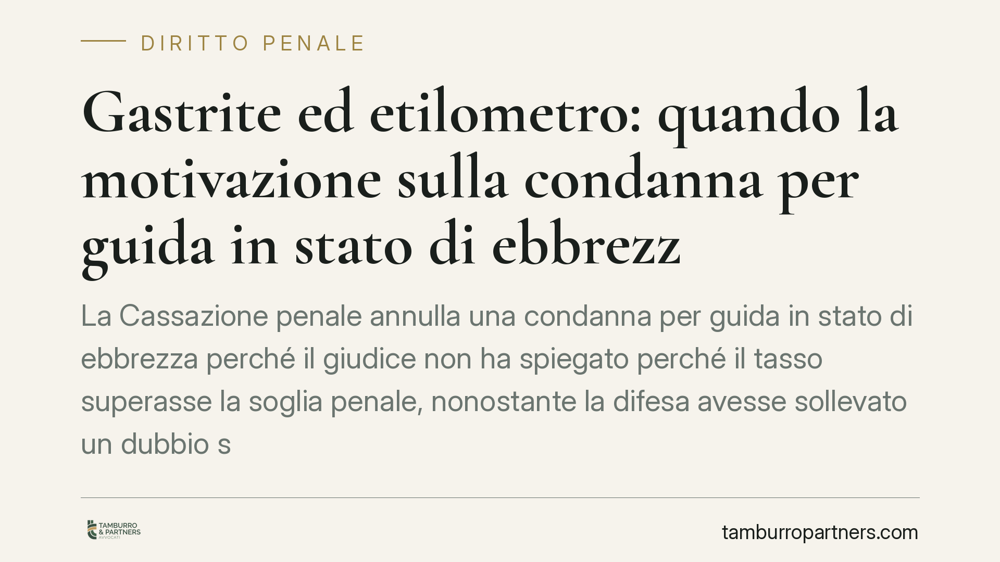

Gastrite ed etilometro: quando la motivazione sulla condanna per guida in stato di ebbrezza è carente
La Cassazione penale annulla una condanna per guida in stato di ebbrezza perché il giudice non ha spiegato perché il tasso superasse la soglia penale, nonostante la difesa avesse sollevato un dubbio sull'attendibilità dell'etilometro. Il caso torna al giudice di rinvio. La pronuncia non riguarda la medicina, ma l'obbligo di motivare oltre ogni ragionevole dubbio.

Il caso
Un automobilista viene condannato per guida in stato di ebbrezza sulla base della misurazione dell'etilometro. La difesa, tramite consulente tecnico, sostiene che una patologia gastrica dell'imputato sarebbe stata astrattamente idonea ad alterare la rilevazione dell'apparecchio. Tribunale e Corte d'appello confermano la responsabilità. La Cassazione penale, Sez. IV, annulla con rinvio.
Un chiarimento preliminare sulla fonte. Il numero e l'anno della sentenza riportati dalla stampa divulgativa (indicata come n. 20966/2026) non risultano al momento verificabili e vanno presi con cautela: ci si limita qui al principio di diritto, che è coerente con l'orientamento consolidato della Sezione IV in tema di motivazione e onere probatorio.
Inquadramento normativo
L'art. 186 del Codice della Strada articola la rilevanza del tasso alcolemico su più soglie. Con tasso tra 0,5 e 0,8 g/l (comma 2, lettera a) si configura un illecito amministrativo. Oltre 0,8 g/l (lettere b e c) scatta il reato, con pene crescenti. Sotto 0,5 g/l, di regola, non vi è alcuna sanzione. Esistono eccezioni rilevanti: per neopatentati e conducenti professionali vige la tolleranza zero, con sanzione anche sotto 0,5 g/l.
Il cuore della decisione sta altrove, sul piano processuale. L'art. 546 c.p.p. impone che la sentenza contenga una motivazione con l'indicazione delle prove e dei criteri di valutazione, confutando le tesi difensive rilevanti. L'art. 533 c.p.p. richiede la condanna solo quando la colpevolezza è provata oltre ogni ragionevole dubbio. Quando la difesa introduce un elemento tecnico potenzialmente decisivo sull'attendibilità della prova, il giudice non può ignorarlo: deve spiegare perché, nonostante quel dubbio, il superamento della soglia penale resta provato.
Perché la condanna cade
È essenziale non equivocare. La Cassazione non ha affermato che la gastrite assolve l'imputato, né ha accertato che quella patologia falsasse davvero la misurazione. Il piano medico e il piano processuale restano distinti.
La condanna cade per vizio di motivazione: il giudice di merito non ha dato conto delle ragioni per cui, a fronte di un'obiezione tecnica mirata, il valore rilevato fosse comunque attendibile e superiore alla soglia del reato. Non è la patologia a vincere, ma la lacuna argomentativa a perdere. Il giudice del rinvio dovrà colmarla: potrà confermare la condanna, ma spiegando il punto.
Implicazioni pratiche
Per chi affronta un procedimento ex art. 186 CdS, la pronuncia ricorda un principio operativo: le contestazioni tecniche all'etilometro, se circostanziate e tempestive, non possono essere liquidate con formule di stile. Non basta che l'apparecchio abbia dato un numero; quel numero deve reggere al vaglio delle obiezioni difensive specifiche.
Resta fermo che il mero richiamo a una patologia non è, di per sé, una strategia difensiva. Serve un'allegazione tecnica concreta, idonea a incidere sull'attendibilità della prova. Ogni situazione va valutata nel merito, perché l'esito dipende dalla qualità della documentazione e dalla coerenza del quadro probatorio complessivo.
Cosa fare in concreto
- Documentate la patologia per tempo: certificazioni mediche, diagnosi e terapie in corso, da produrre già nelle fasi iniziali del procedimento e non a dibattimento ormai avanzato.
- Verificate la taratura dell'etilometro: richiedete i dati di omologazione e l'ultima revisione periodica dell'apparecchio utilizzato, elementi spesso decisivi sull'attendibilità della misura.
- Formalizzate per tempo la consulenza tecnica di parte (CTP): un'obiezione tecnica tardiva o generica perde efficacia.
- Pretendete motivazione sul punto: se la difesa solleva un'eccezione sull'attendibilità della prova, verificate che la sentenza vi risponda espressamente; in caso contrario, è una base per l'impugnazione.
- Valutate la doppia rilevazione e l'intervallo temporale tra le due misurazioni, elementi tecnici che il giudice deve considerare.
In sintesi
La decisione non amplia i margini di impunità né promette esiti. Ribadisce un principio di garanzia: la condanna penale esige una motivazione che regga al confronto con le obiezioni difensive specifiche. Un dubbio tecnico pertinente, se ignorato, vizia la sentenza.
---
*Contributo informativo a cura di Tamburro & Partners - Avv. Giuseppe Tamburro. Non costituisce parere legale.*
Ogni condominio ha una storia a sé.
Se gestisci un'amministrazione e vuoi un confronto su una specifica questione condominiale, scrivi allo studio. Ti rispondiamo entro un giorno lavorativo.